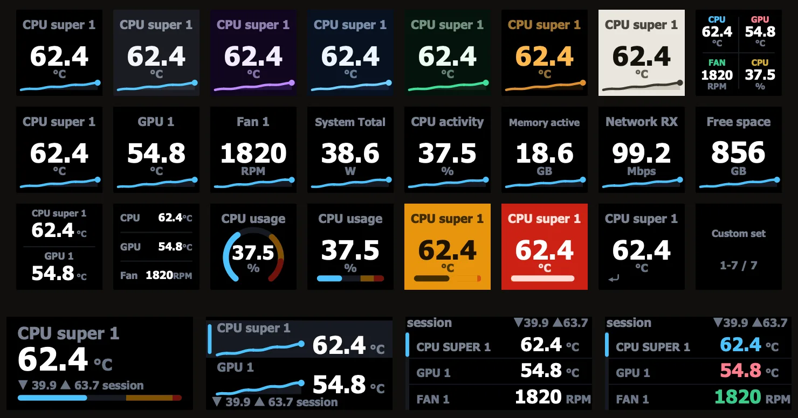

macOS · 1.0.1
Mac Sensors
Temperatures, fan speeds, power, CPU activity, memory, storage and network from your Mac, on keys and Stream Deck + dials. It only reads: no fan control, no administrator password, no helper app.
macOS 13.5 or later · Stream Deck 7.1 or later · Apple silicon and Intel